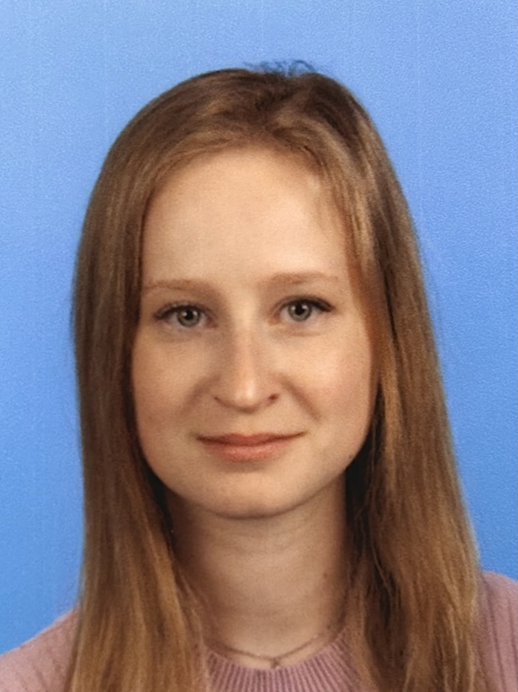

Ajda Lemut Furlani

Research interest
My primary research interest lies in the study of inverse semigroups and their generalizations.
My primary research interest lies in the study of inverse semigroups and their generalizations.